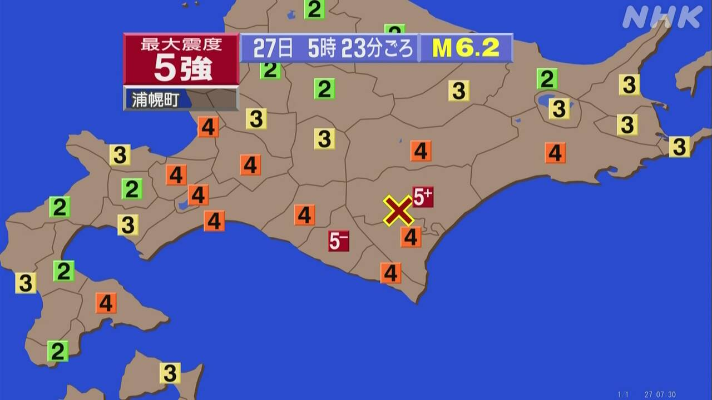
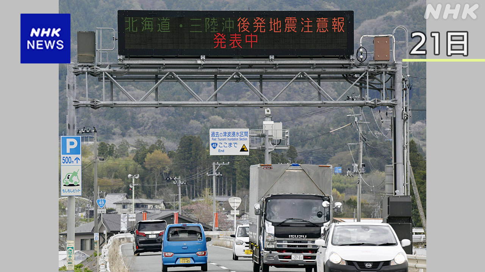
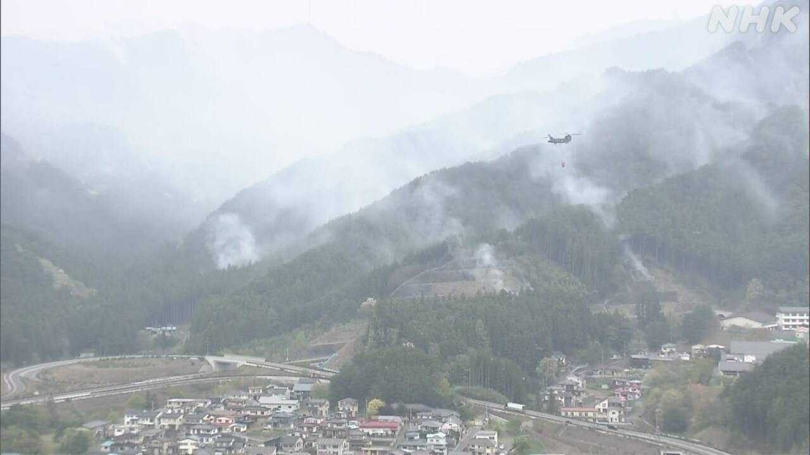
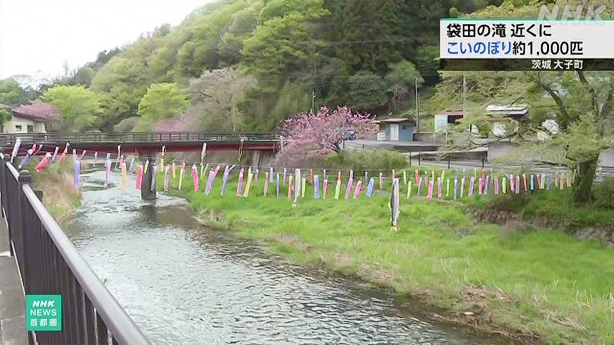

最新ニュース
1️⃣ 27日の朝 北海道で大きい地震があった

北海道であった地震のニュースです。
27日午前5時23分ごろ、北海道の十勝地方で大きい地震がありました。
いちばん大きかった所は震度5強でした。地震のあとに津波はありませんでした。
気象庁は、「地震が大きかった所は、山や崖が崩れるかもしれません。危ないです。地震があったり、雨が降ったりしたときには気をつけてください」と言っています。
2️⃣ 気象庁「大きい地震のときの準備を続けて」

27日午後5時まで出ていた「北海道・三陸沖後発地震注意情報」という特別な情報が終わりました。
今月20日、東北地方の東の海で、大きい地震がありました。青森県などで強く揺れて、津波も来ました。地震のあと気象庁は特別な情報を出しました。
北海道から千葉県までの182の市や町、村に、もっと大きい地震があるかもしれません。
逃げるための準備をしてほしいと言っていました。
特別な情報は、27日午後5時に終わりました。しかし、気象庁の人は「これからも大きい地震があるかもしれません。準備を続けてください」と言っています。
気象庁は、27日、北海道であった地震は、後発地震注意情報で気をつけてほしいと言っていた地震ではないと話しています。
3️⃣ 岩手県の山の火事 はじめて雨が降って火は少し弱くなった

岩手県大槌町の山で火事が起きて6日目です。
27日までに1600ヘクタール以上が焼けました。火を消すために薬を使ったり、ヘリコプターで空から水をまいたりしました。
そして午後、火事が起きてからはじめて雨が降りました。消防は、火は少し弱くなったと言っています。
気象台によると、28日も雨が降りそうだということです。町の人は「これで火が消えてほしい」と話していました。
26日、福島県喜多方市でも山の火事がありました。27日、これ以上広がる心配はなくなりました。
4️⃣ 茨城県 1000匹の「こいのぼり」を飾った

5月5日は「こどもの日」です。
日本では「こいのぼり」を飾って、子どもたちが元気に育つことを祈ります。
こいのぼりは「コイ」という魚を布や紙で作ったものです。
茨城県大子町にある袋田の滝の近くでは、川にたくさんのこいのぼりを飾りました。
川の上に25本のロープを張って、全部で1000匹ぐらい飾りました。中にはこの川に住んでいる魚、アユやウナギの形をしたものもあります。
訪れた人たちは、青い空の中をこいのぼりが泳いでいるのを写真に撮っていました。
こいのぼりは5月の終わりまで見ることができます。
- 〜ごろ
- 〜がある / 〜がいる
- 〜ところ
- 〜後 / 〜あと
- 〜かもしれない / 〜かもしれません
- 〜ないで
- 〜てください / 〜でください
- 〜たり〜たりする
- 〜ている / 〜でいる
- 〜という
- 〜まで
- 〜など
- 〜から
- 〜から〜まで
- 〜ため
- 〜までに
- 〜以上
- 〜ため(に)
- 〜てから
- 〜そうだ
- 〜によると
- 〜こと
- 〜ても / 〜でも
- 〜ので
- 〜くらい / 〜ぐらい
- 〜中
- 〜ことができる
vebaev.github.io
Generated: 2026-04-27 11:45:24 UTC